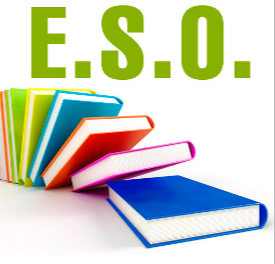
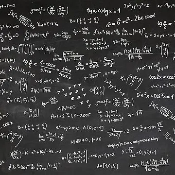

Educación Secundaria Obligatoria
- La oferta formativa de optativas e itinerarios en la ESO del IES Matemático Puig Adam se renueva cada curso según la información proporcionada por el alumnado, el profesorado que define en las reuniones de la comisión de coordinación pedagógica la concreción del currículum y las familias del centro como resultado de la orientación académica que se trabaja en la acción tutorial.
- Programa de Diversificación Curricular.
- Materias propias de Proyecto en 3º y 4º dentro del catálogo de optativas. El curso actual contamos con proyecto de innovación científica, proyecto en cultura audiovisual y plástica y proyecto musical. Estas materias optativas tienen una carga horaria de dos horas semanales.


Bachillerato Diurno

- Se ofrecen las modalidades de Ciencias y Tecnología, Ciencias sociales y Bachillerato General.


Bachillerato Nocturno
- El nuevo Bachillerato Semipresencial para personas adultas gana en flexibilidad y mantiene en nuestro centro las modalidades de Humanidades-Ciencias Sociales y Ciencias-Tecnología. El formato actual de matrícula permite elegir materias de forma libre, pudiendo combinar asignaturas de primero y segundo curso indistintamente. Además, las sesiones presenciales se combinan con trabajo digital sin ataduras al reloj, facilitando así la compatibilidad para aquellos que también trabajan.
CARACTERÍSTICAS GENERALES
- Deben tenerse 18 años cumplidos a 31 de diciembre del año de matriculación.
- 50% presencial 50% digital de 15:20 a 21:10 horas.
- Se reconocen todas las asignaturas aprobadas en diurno.
- No se repiten cursos completos y los aprobados se guardan para siempre.
- Sin límite de convocatorias.
- Libertad de elección de asignaturas en número (con un mínimo de cuatro al comenzar) y en curso (se pueden escoger materias de 1º y de 2º simultáneamente)
- Flexibilidad horaria.
- Tutorías individuales.
- Matriculación del 1 al 15 de septiembre (ampliable hasta 31 octubre).
FP Informática

- DAM, el ciclo formativo de grado superior en Desarrollo de Aplicaciones Multiplataforma brinda una capacitación integral en la creación de software adaptable a diversas plataformas. Los estudiantes desarrollan habilidades avanzadas en programación, diseño de interfaces y gestión de bases de datos, preparándolos para enfrentar los retos de la industria de desarrollo de aplicaciones. Con un enfoque práctico y orientado a proyectos, este ciclo formativo asegura que el alumnado esté preparado para innovar y contribuir a la evolución constante de la tecnología multiplataforma.
- DAW, el ciclo formativo de grado superior en Desarrollo de Aplicaciones Web proporciona una formación integral para la creación y gestión de aplicaciones web modernas. Los estudiantes adquieren habilidades sólidas en programación, diseño de interfaces, bases de datos y despliegue de aplicaciones en entornos web. Con un enfoque práctico y actualizado, el programa aborda tanto los fundamentos esenciales como las tecnologías emergentes, preparando al alumnado para enfrentar desafíos del mundo real en el desarrollo web.